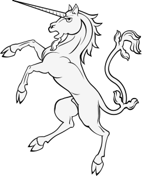

Hello les gens
Coucou
Cette page est une
page toute simple

avec une licorne.
Mais, vous savez, moi je ne crois pas qu’il y ait de bonne ou de mauvaise situation. Moi, si je devais résumer ma vie aujourd’hui avec vous, je dirais que c’est d’abord des rencontres, des gens qui m’ont tendu la main, peut-être à un moment où je ne pouvais pas, où j’étais seul chez moi. Et c’est assez curieux de se dire que les hasards, les rencontres forgent une destinée… Parce que quand on a le goût de la chose, quand on a le goût de la chose bien faite, le beau geste, parfois on ne trouve pas l’interlocuteur en face, je dirais, le miroir qui vous aide à avancer. Alors ce n’est pas mon cas, comme je le disais là, puisque moi au contraire, j’ai pu ; et je dis merci à la vie, je lui dis merci, je chante la vie, je danse la vie… Je ne suis qu’amour ! Et finalement, quand beaucoup de gens aujourd’hui me disent « Mais comment fais-tu pour avoir cette humanité ? », eh ben je leur réponds très simplement, je leur dis que c’est ce goût de l’amour, ce goût donc qui m’a poussé aujourd’hui à entreprendre une construction mécanique, mais demain, qui sait, peut-être seulement à me mettre au service de la communauté, à faire le don, le don de soi… »